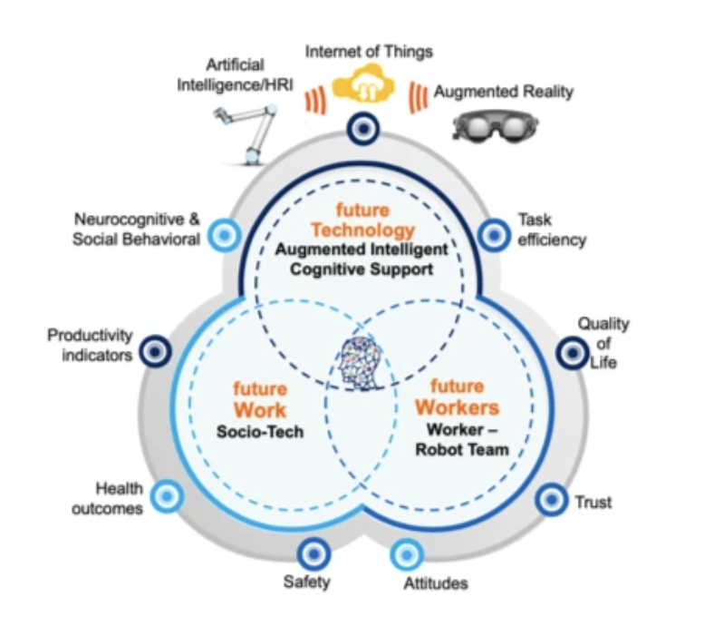
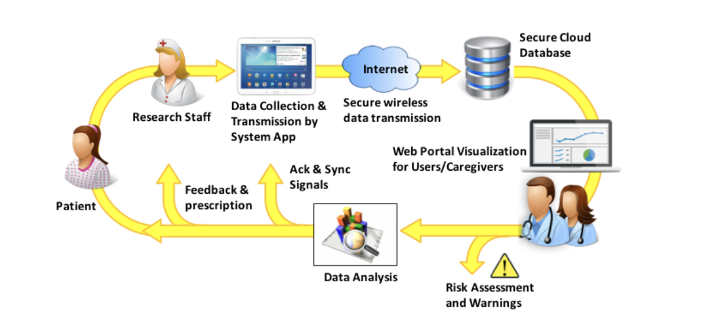

Projects
Augmenting Human Cognition with Collaborative Robots AMELIA (AugMEnted Learning InnovAtion)
This convergence research project contributes new knowledge and theory of Human-Computer Interaction and Human-Robot Interaction, by augmenting human cognition for safer and more efficient collaborative robot interaction. To meet these goals:
(1) We developed a novel HRI task/scenario classification scheme in collaborative robotics environments vulnerable to observable systems failures;
(2) We established fundamental neurophysiological, cognitive, and socio-behavioral capability models (e.g., workload, cognitive load, fatigue/stress, and affect) during these HRI (i.e., the mind motor machine nexus);
Published work:
A)Classifying Affective States in Virtual Reality Environments Using Physiological SignalsEmotions are functional behaviors influenced by thoughts, stimuli, and other factors that induce neurophysiological changes in the human body. Understanding and classifying emotions are challenging as individuals have varying perceptions of their environments. Therefore, it is crucial that there are publicly available databases and virtual reality (VR) based environments that have been scientifically validated for assessing emotional classification. This study utilized two commercially available VR applications (Guided Meditation VR and Richie’s Plank Experience) to induce acute stress and calm state among participants. Subjective and objective measures were collected to create a validated multimodal dataset and classification scheme for affective state classification. Participants’ subjective measures included the use of the Self-Assessment Manikin, emotional cards and 9 point Visual Analogue Scale for perceived stress, collected using a Virtual Reality Assessment Tool developed by our team. Participants' objective measures included Electrocardiogram and Respiration data that were collected from 25 participants (15 M, 10 F, Mean = 22.28 ± 4.92). The features extracted from these data included heart rate variability components and respiration rate, both of which were used to train two machine learning models. Subjective responses validated the efficacy of the VR applications in eliciting the two desired affective states; for classifying the affective states, a logistic regression (LR) and a support vector machine (SVM) with a linear kernel algorithm were developed. The LR outperformed the SVM and achieved 93.8%, 96.2%, 93.8% leave one subject out cross-validation accuracy, precision and recall, respectively. The VR assessment tool and data collected in this study are publicly available for other researchers.
B) A Database for Cognitive Workload Classification Using Electrocardiogram and Respiration SignalCognitive workload is a critical factor in determining the level of attentional effort exerted by users. Understanding and classifying cognitive workload is challenging as individuals exert varying levels of mental effort to meet the task's underlying demands. Twenty-six participants (12M, 14F, Mean = 22.68 ± 5.10) were exposed to two different tasks designed to induce low and high cognitive workloads. Subjective and objective measures were collected to create a novel, validated multimodal dataset for cognitive workload classification. Participants’ perceived workload was collected using the NASA-TLX. Electrocardiogram (ECG) and Respiration (RR) data were collected to extract the Heart Rate Variability and Respiration Rate Variability features. Four machine learning algorithms were utilized to classify cognitive workload levels where AdaBoost classifier achieved the highest Leave-One-Subject-Out Cross-Validation accuracy, and F1-Score of 80.2%, 80.3% respectively. This is the first publicly available dataset with ECG, RR and subjective responses for cognitive workload classification.
C) Sex Parity in Cognitive Fatigue Model Development for Effective Human-Robot CollaborationIn recent years, robots have become vital to achieving manufacturing competitiveness. Especially in industrial environments, a strong level of interaction is reached when humans and robots form a dynamic system that works together towards achieving a common goal or accomplishing a task. However, the human-robot collaboration can be cognitively demanding, potentially contributing to cognitive fatigue. Therefore, the consideration of cognitive fatigue becomes particularly important to ensure the efficiency and safety in the overall human-robot collaboration. Additionally, sex is an inevitable human factor that needs further investigation for machine learning model development given the perceptual and physiological differences between the sexes in responding to fatigue. As such, this study explored sex differences and labeling strategies in the development of machine learning models for cognitive fatigue detection. Sixteen participants, balanced by sex, recruited to perform a surface finishing task with a UR10 collaborative robot under fatigued and non-fatigued states. Fatigue perception and heart rate activity data collected throughout to create a dataset for cognitive fatigue detection. Equitable machine learning models developed based on perception (survey responses) and condition (fatigue manipulation). The labeling approach had a significant impact on the accuracy and \mbox{F1-score}, where perception-based labels lead to lower accuracy and \mbox{F1-score} for females likely due to sex differences in reporting of fatigue. Additionally, we observed a relationship between heart rate, algorithm type, and labeling approach, where heart rate was the most significant predictor for the two labeling approaches and for all the algorithms utilized. Understanding the implications of label type, algorithm type, and sex on the design of fatigue detection algorithms is essential to designing equitable fatigue-adaptive human-robot collaborations across the sexes.
(3) use these models to determine when and how a human’s cognitive, social, behavioral and environmental states require adjustment via technology to enhance HRI for efficient and safe work performance
Published work:
A) A Machine Learning and Edge Computing Framework for Real-Time Cognitive Workload Detection and Co-Robot AdaptationIn recent years, there has been a growth in the use of industrial robots for a variety of activities that require a high degree of precision. One pillar of Industry 5.0 focuses on collaborative robots, also known as cobots designed to collaborate with people to enhance workplace safety, precision, and performance. However, human-robot collaboration can be cognitively demanding, potentially contributing to high levels of cognitive workload. The consideration of cognitive workload becomes particularly important to ensure efficiency and safety in the overall human-robot collaboration. In this study, we developed a framework for real-time cognitive workload detection using machine learning and robot speed adaptation. Twenty participants were recruited to perform a collaborative pick and place task designed under low and high cognitive workload levels. Additionally, the participants performed the pick and place task utilizing the proposed framework under the high level of cognitive workload. Task performance metrics(i.e., accuracy, efficiency) and cognitive workload perceptions were collected during all sessions. The results demonstrate that robot adaptation had a significant impact on the task performance metrics(i.e., accuracy, efficiency where the decrease of the speed of the robot leads to faster completion times and short travel distances to pick and place the objects. However, the robot adaptations had no significant impact on the cognitive workload perceptions, where the participants perceived the task moderately less cognitively demanding during these sessions. Finally, we observed that lower robot speeds lead to faster cognitive workload recovery. Understanding the limits of effective human behavior in a shared cobot environment is critical for successful collaboration that improves human safety, efficiency, and user satisfaction.
(4) We created an innovative and transformative Work 4.0 architecture (AMELIA: AugMEnted Learning InnovAtion) that includes a layer of augmented reality for human and robots to mutually learn and communicate current states.
Overall, we developed a novel communication scheme using artificial emotional intelligence in which robots and humans collaborate in potentially dangerous situations. The robot will detect the worker’s “cognitive state” using different machine learning techniques, and then take the appropriate action. Ultimately AMELIA seeks to empower the worker to focus on complex, cognitive problem-solving tasks, performed safely and efficiently, while ensuring that it adapts to both the worker's attitudes and cognitive states.
Predictive Analytics for Remote Health Monitoring
In this project we focused on designing advanced algorithms based on machine learning for monitoring patients with chronic diseases. I was interested in creating advanced data analytics methods to predict health conditions and providing clinical interventions with the goal of preventing medically adverse events.
Published work:
A) Interactive Predictive Analytics for Enhancing Patient Adherence in Remote Health MonitoringAlthough Remote Health Monitoring (RHM) systems have shown potential for improving quality of care and reducing healthcare costs, low adherence of human subjects can dramatically degrade the system efficacy. The purpose of this research is to design and develop an interactive and human-centered framework with new data-driven techniques and predictive analytics algorithms to enhance patients' engagement and compliance with RHM systems. In this paper, we propose a novel interactive data-driven system for on-demand data acquisition to enhance human subjects' adherence in a RHM system. In this approach, we develop a predictive analytics model that attempts to predict medical conditions with the least amount of collected data in order to reduce patients' burden and improve the adherence. The proposed framework includes a data-driven unit named Interactive Learning for Data Acquisition (ILDA) for on-demand data collection in order to enhance the prediction confidence and accuracy as needed. The ILDA automatically decides whether it still needs to acquire additional information from some specific subjects or not. It is responsible for evaluating the confidence of the predictions, detecting the need to interact with specific subjects to collect new data, and identifying what additional information should be requested from which subjects. The proposed method has been tested and validated on two different datasets from diabetic and heart disease patients.
B) Interactive Dimensionality Reduction for Improving Patient Adherence in Remote Health MonitoringRemote Health Monitoring Systems (RHM) and Body Sensor Networks (BSN) are effective tools to monitor and improve health conditions by collecting continuous data from patients. Although Remote Health Monitoring systems have shown potential for improving the quality of care and reducing healthcare costs, research studies have shown that the low adherence of patients can significantly degrade the system efficacy. In RHMS, often times patients are required to answer numerous questions, which are necessary to identify health conditions associated with medical diagnoses or adverse events. In this paper, we propose a new framework for question selection in order to reduce patients' burden, and consequently increase patients' engagement and adherence. We envision a unit named Interactive Learning for Data Acquisition (ILDA) for on demand data acquisition in order to improve the quality of our prediction. The ILDA attempts to identify the best non-redundant question subset in order to improve the response rate. It is also responsible to identify what additional information should be requested from which subjects to improve the accuracy and certainty of prediction. The proposed framework has been tested and validated on a large dataset collected from 600 AIDS patients.